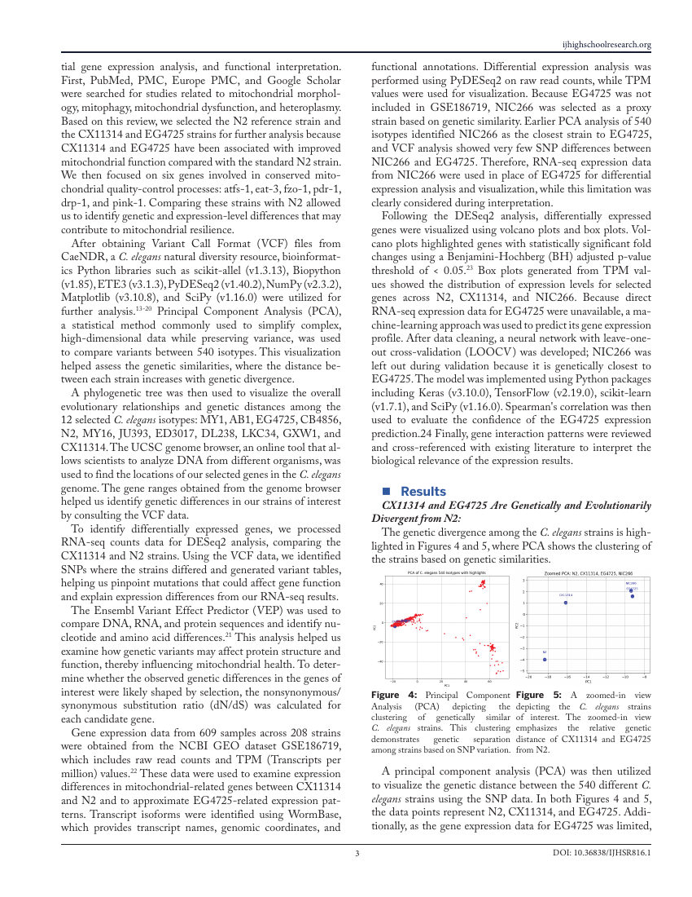

FISSIONREPORTED FINDING
drp-1
SELECTION INTERPRETATION
VARIANT SUMMARY
Purifying (reported)Neutral (reported)
Explore genetic variation across six mitochondrial quality-control genes. Start with a working browser-based VCF filter.
Click Run sample demo to filter five clearly labeled synthetic variant records instantly. Or upload a small VCF file to filter by chromosome, position, and genotype locally. This implements VCF filtering, not the full published analysis.
| CHROM | POS | REF → ALT | QUAL | GENOTYPE |
|---|---|---|---|---|
| Run the filter to inspect variants. | ||||
The sample is invented solely to demonstrate parsing; it is not research data. A matching genomic interval is not evidence of gene function or pathogenicity. The parser supports standard uncompressed VCF text, not compressed .vcf.gz files.
Rather than introducing new mutations, the study examined variants already present in wild C. elegans strains. Its findings motivate hypotheses about mitochondrial regulation; they do not establish a causal resilience mechanism.
N2 serves as the laboratory reference. CX11314 and EG4725 are focal wild strains. NIC266 is used as a proxy for EG4725 in part of the RNA-seq analysis because EG4725 was not present in the expression dataset.
Gene annotation and variant consequences, evolutionary analyses, expression measurements, and a neural-network prediction were combined to prioritize candidate mechanisms.
The paper proposes CRISPR-Cas9 HDR follow-up experiments for pdr-1 and atfs-1. These are proposed validation steps, not experiments completed in the supplied repository.
Select a gene to inspect its role, reported selection pattern, and variant-consequence summary. Values below are transcribed from the repository's published-research summary, not computed live.
Move between evidence layers to see what was observed, inferred, predicted, or proposed. The accompanying images are excerpts from the supplied manuscript.

ORIGINAL MANUSCRIPT PAGE EXCERPTTrace the project back to its original research materials. The source notebook is partial; the complete published analysis pipeline and raw datasets are not included in this site.
DOI: 10.36838/IJHSR816.1
Gene annotation, sequence extraction, SNP and VEP preparation
Original research presentation (PDF)
GEO accession GSE186719
Original README, project history, citations, data guidance and source files
Original research overview (repository PDF)
Publication authorship and DOI record
The gene guide and evidence notebook summarize supplied research; the VCF filter is independently implemented educational browser code. It does not run PCA, differential expression, neural-network training, CRISPR, or the original notebook. This companion website was created with AI assistance and should not be represented as independently student-coded research software.